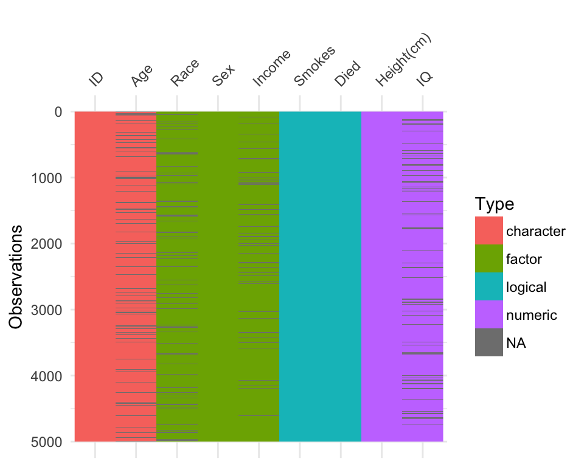
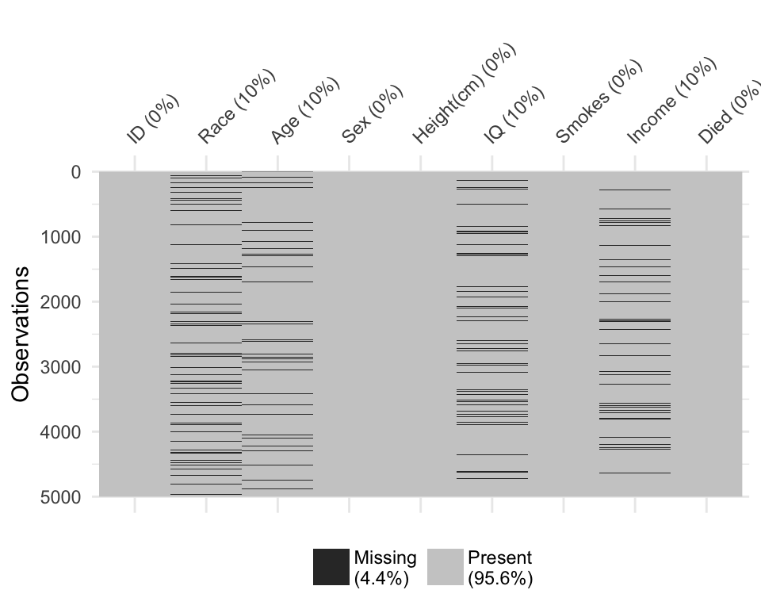
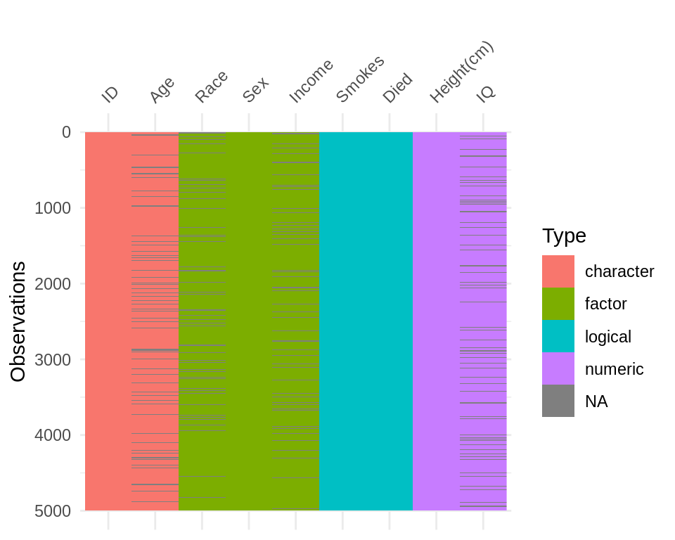
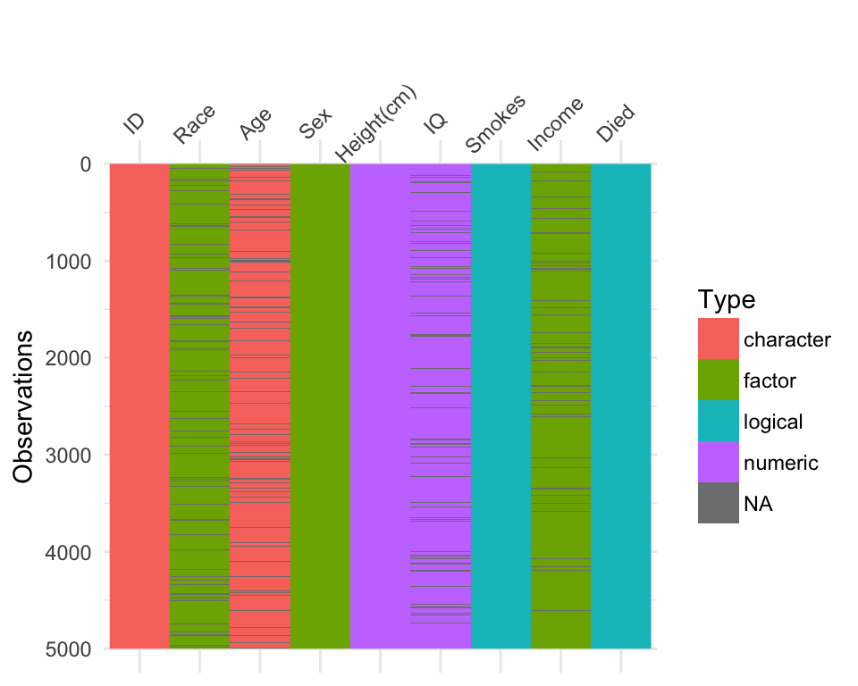
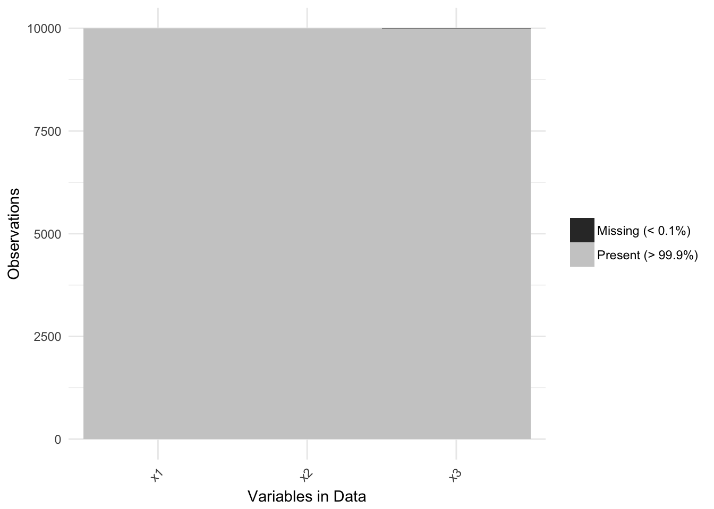
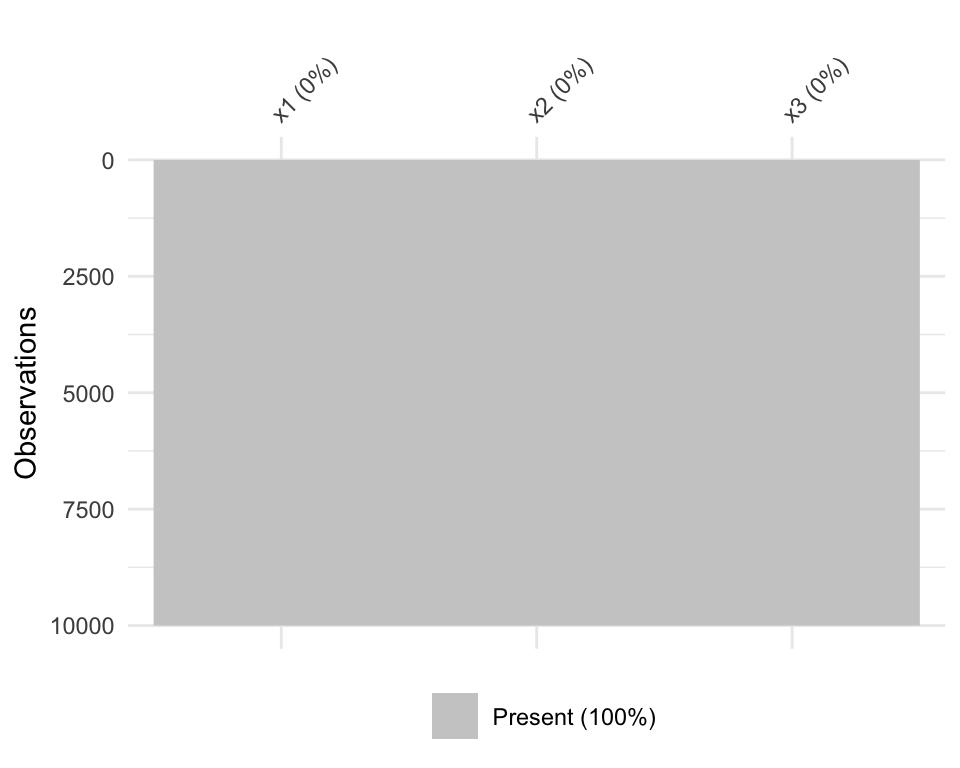
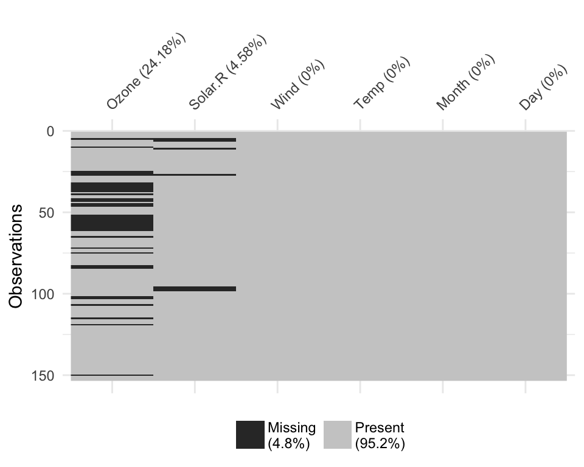
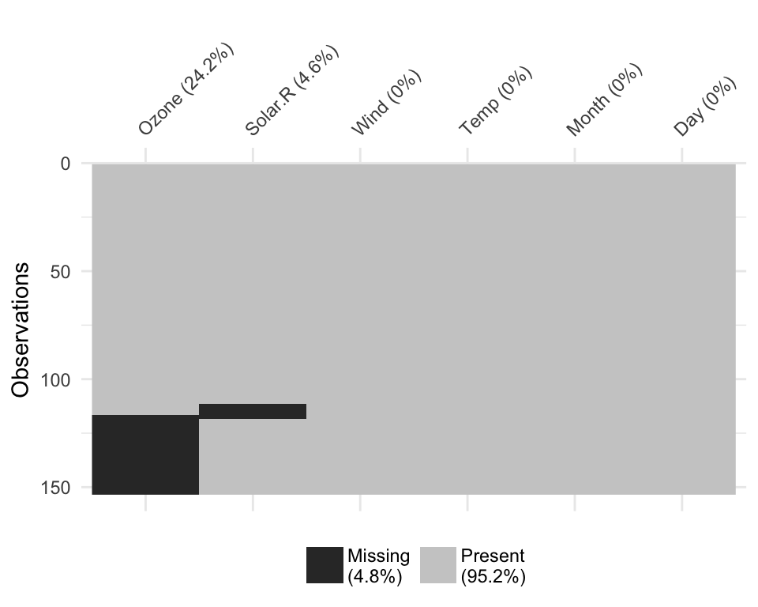

Using visdat
Nicholas Tierney
2017-07-24
When you get a new data set, you need to look at the data to get a sense of what it contains and potential problems with it. That’s a key phrase here “looking at the data” - what does that mean?
On the one hand, you can look at the head of the data:
head(iris)## Sepal.Length Sepal.Width Petal.Length Petal.Width Species
## 1 5.1 3.5 1.4 0.2 setosa
## 2 4.9 3.0 1.4 0.2 setosa
## 3 4.7 3.2 1.3 0.2 setosa
## 4 4.6 3.1 1.5 0.2 setosa
## 5 5.0 3.6 1.4 0.2 setosa
## 6 5.4 3.9 1.7 0.4 setosaOr you can have a glimpse at it through dplyr::glimpse
dplyr::glimpse(iris)## Observations: 150
## Variables: 5
## $ Sepal.Length <dbl> 5.1, 4.9, 4.7, 4.6, 5.0, 5.4, 4.6, 5.0, 4.4, 4.9,...
## $ Sepal.Width <dbl> 3.5, 3.0, 3.2, 3.1, 3.6, 3.9, 3.4, 3.4, 2.9, 3.1,...
## $ Petal.Length <dbl> 1.4, 1.4, 1.3, 1.5, 1.4, 1.7, 1.4, 1.5, 1.4, 1.5,...
## $ Petal.Width <dbl> 0.2, 0.2, 0.2, 0.2, 0.2, 0.4, 0.3, 0.2, 0.2, 0.1,...
## $ Species <fctr> setosa, setosa, setosa, setosa, setosa, setosa, ...Here we see that we have doubles, and a factor. We get some insight into the data.
But we don’t always have data like the canonical iris dataset. let’s take a look at some data that might be a bit more typical of “messy” data.
library(visdat)
dplyr::glimpse(typical_data)## Observations: 5,000
## Variables: 9
## $ ID <chr> "0001", "0002", "0003", "0004", "0005", NA, "0007",...
## $ Race <fctr> White, Hispanic, White, Black, White, Hispanic, Hi...
## $ Age <int> 34, 25, 35, NA, NA, NA, 26, 31, 20, 26, NA, NA, 21,...
## $ Sex <fctr> Female, Male, Male, Female, Male, Male, Male, Fema...
## $ Height(cm) <dbl> 181.6, 174.3, 171.9, 188.4, 171.1, 179.5, 175.8, 17...
## $ IQ <dbl> 100, 100, 104, 116, 106, 105, 95, 98, 88, NA, 96, 1...
## $ Smokes <lgl> FALSE, FALSE, FALSE, FALSE, FALSE, FALSE, TRUE, FAL...
## $ Income <dbl> 33873.82, 38799.39, 7235.28, 29629.44, 19990.00, 69...
## $ Died <lgl> TRUE, TRUE, FALSE, TRUE, TRUE, FALSE, FALSE, TRUE, ...Looking at this, you might then ask:
Isn’t it odd that Income is a factor? And Age is a character?
And you might start to wonder what else is different, what else changed?
And it might be a bit unclear where to go from there. Do you plot the data? Why does my plot look weird? What are these other strange features in the data? The visdat package provides visualisations of an entire dataframe at once. Initially inspired by csv-fingerprint, visdat provides tools to create heatmap-like visualisations of an entire dataframe. visdat provides 2 main functions: vis_dat and vis_miss.
vis_dat() helps explore the data class structure and missingness:
vis_dat(typical_data)
And the vis_miss function provides a custom plot for missing data.
vis_miss(typical_data)
The name visdat was chosen as it borrows from the idea of testdat, which provides unit testing for your data. In a similar way, visdat provides visual tests, the idea being that first you visualise your data (visdat), then you run tests from testdat, or a package like assertr, to fix these errors.
Using vis_dat
Let’s see what’s inside the dataset airquality, which contains information about daily air quality measurements in New York from May to September 1973. More information about the dataset can be found with ?airquality.
library(visdat)
vis_dat(airquality) The plot above tells us that R reads this dataset as having numeric and integer values, with some missing data in
The plot above tells us that R reads this dataset as having numeric and integer values, with some missing data in Ozone and Solar.R. The classes are represented on the legend, and missing data represented by grey. The column/variable names are listed on the x axis.
By default, vis_dat sorts the columns according to the type of the data in the vectors. You can turn this off by setting sort_type = FALSE. This feature is better illustrated using the typical_data dataset, created using wakefield and contained within visdat.
vis_dat(typical_data)
vis_dat(typical_data,
sort_type = FALSE)
Using vis_miss
We can explore the missing data further using vis_miss.
vis_miss(airquality)Notice that the percentages of missingness are provided in the data. These are accurate to 1 decimal place. vis_miss indicates when there is a very small amount of missing data at <0.1% missingness.
df_test <- data.frame(x1 = 1:10000,
x2 = rep("A", 10000),
x3 = c(rep(1L, 9999), NA))
vis_miss(df_test)
vis_miss will also indicate when there is no missing data at all.
df_test <- data.frame(x1 = 1:10000,
x2 = rep("tidy", 10000),
x3 = rep("data", 10000))
vis_miss(df_test)
Columns can be arranged by columns with most missingness, by setting sort_miss = TRUE.
vis_miss(airquality,
sort_miss = TRUE)
And missingness can be clustered by setting cluster = TRUE
vis_miss(airquality,
cluster = TRUE)
To further explore the missingness structure in a dataset, I recommend the naniar package, which provides more general tools for graphical and numerical exploration of missing values.
Interactivity
Thanks to Carson Sievert, you can now add some really nifty interactivity into visdat by using plotly::ggplotly, allowing for information to be revealed upon mouseover of a cell.
library(plotly)## Loading required package: ggplot2##
## Attaching package: 'plotly'## The following object is masked from 'package:ggplot2':
##
## last_plot## The following object is masked from 'package:stats':
##
## filter## The following object is masked from 'package:graphics':
##
## layout